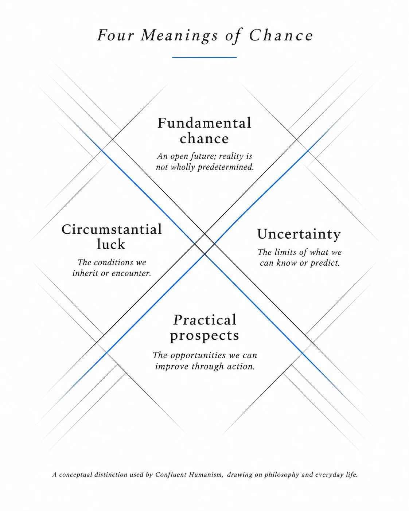

The Open Future
What sort of uncertainty?
A sealed envelope lies on a table. You do not know what it contains. When you open it, you will learn something, but opening it does not ordinarily change the words already written inside.
Now imagine watching clouds gather above a field. Even an experienced observer cannot see every movement of air, every change of pressure or every influence upon the rain. What happens next may be difficult to forecast because the system is intricate and our knowledge incomplete. This too is uncertainty, though of a different kind.
Finally, ask whether some events are not fixed in advance by the complete past and the laws governing them. That would be fundamental chance, or ontological indeterminacy: more than ignorance of an already settled outcome. The three questions must not be collapsed into one. A sealed envelope, a changing storm and an indeterminate event may all surprise us while having very different explanations.
Two other meanings matter in ordinary life. Circumstantial luck concerns what we inherit or encounter without choosing it. Practical prospects concern the opportunities and risks that action or institutions can sometimes change. A safer crossing or an accessible classroom can improve someone's options under either picture of the universe.
These senses of chance are related, but not interchangeable. A probability estimate depends on a model, evidence or stated assumptions; no numerical estimate alone can decide whether the universe is fundamentally indeterminate. When no reliable estimate exists, saying we have 'better chances' may mean only that an obstacle has been removed.

Why hold that the future is open?
Confluent Humanism affirms that the future is not wholly fixed by the past. That is a claim about reality, not simply about our inability to predict it. A careful reader can reasonably ask: why believe it?
Physics often uses probabilities, but what they reveal about reality is contested. Some interpretations of quantum theory are indeterministic; others are deterministic. Neither probabilistic predictions nor their success demonstrate that human choices are free or that kindness is required. This book offers no scientific proof of its metaphysical conviction.
The question of openness is philosophical as well as scientific. One picture holds that the complete past and natural laws fix all later events, even when nobody can predict them. Another allows at least some real alternatives until events occur. Confluent Humanism provisionally favours the latter: possibility may describe something in the world, not only a gap in an observer's knowledge. This preference is a conviction to defend and revise, not an inference from the mere feeling that life is unpredictable.
Why give that preference a place in a philosophy of living? It reminds us to leave room, in our picture of reality, for outcomes that may be more than the inevitable unfolding of what came before. There is intellectual value in distinguishing a future we cannot predict from one that may not yet be settled. We find the second picture compelling, while recognising that compelling is not conclusive. This is a way of interpreting existence, not a discovery from which ethical rules can be calculated.
For everyday action, a further distinction is more immediate. Uncertainty means we may lack knowledge; fundamental chance would mean that even complete knowledge of the past did not settle every event; practical possibility means that access, time, trust and resources can change what someone is able to do. The case for fairness, care and shared opportunity rests on people's lives and needs under either account of reality. We need not resolve the first two questions before acting responsibly on the third.
The difference is substantial, even though it does not settle how anyone ought to behave. If the first picture is true, the traveller who missed a bus never had a different physical future available at that moment, given the very same past and laws. If the second is true, some genuine alternatives may have remained. Neither picture tells us which friendship was deserved, whether the traveller had enough information to choose well, or what another person owes them. Those questions require other kinds of reasons.
A determinist may reasonably find that the first picture already accounts for experience. Equally, successful prediction of many events does not establish that every event is fixed. Everyday uncertainty settles neither dispute. Confluent Humanism therefore keeps its preference for an open future available to philosophical criticism and revision.
What, then, would change in this book if determinism were true? Its account of the ultimate character of reality would change. Its invitation to pay attention, study causes, weigh reasons, resist exploitation and widen another person's practical options would not simply disappear. These ethical commitments stand upon the dignity and vulnerability of living beings, the effects of our actions and the possibility of fair cooperation—not upon randomness delivering moral instructions.
This is the distinctive combination proposed by Confluent Humanism: contingency taken seriously as a view of reality, agency understood within circumstances, and shared responsibility treated as an ethical choice. Each part can be argued about in its own right. The book offers their confluence as a particular synthesis, not as proof that earlier traditions were silent about any one of them.
The page and the hand
Suppose a writer begins a story without knowing its ending. A page waits beside a cup gone cold. The writer has a language learned from others and memories they did not choose to acquire. A phrase arrives unexpectedly. A visitor interrupts. A sentence is crossed out and a different one kept.
The writer's work is conditioned by the world, yet their ability to deliberate matters to its shape. They can listen to criticism, recognise a weak argument and decide to begin again. The image cannot show us whether the writer's decisions are indeterminate. It shows what we mean when we say a person participates in the making of something.
Here we must distinguish determinism from fatalism. In a deterministic picture, events follow from preceding conditions and laws. Decisions, reasons, effort and persuasion may themselves be important causes. Fatalism, by contrast, suggests that some outcome will arrive regardless of what anyone does. Treating those as the same view unfairly makes determinism sound like an excuse for inaction. Even in a determined world, a bridge built carefully may stand where a neglected bridge would fall, and a reasoned conversation may change a decision.
Freedom is not randomness. An uncontrolled toss of an inner coin would make a choice unpredictable, not necessarily our own. In this book, meaningful agency involves attending to reasons, considering alternatives, learning and responding within real constraints. This is an account of capacities we can discuss and observe, not proof that a person could have acted differently with exactly the same past and laws. Compatibilists hold that freedom can coexist with determinism; incompatibilists deny that, though they disagree about what else freedom requires. Confluent Humanism affirms meaningful agency and an open future without claiming that the latter proves the former. We can examine what a person knew, what pressures they faced and what responsibilities followed without pretending the metaphysical debate has ended.
In daily life, practical freedom varies. A person with reliable housing, information and people they can trust may have more usable options than someone facing coercion, exhaustion or poverty. That does not mean one person's inherent worth or metaphysical freedom can be measured on a scale. It means their room to act may be larger or smaller, and other people can sometimes help enlarge it.
Fate and the stories we tell
Two people take shelter from the rain in the same small shop. They begin talking, become friends and one day find it difficult to imagine life without the other. 'It was fate,' one says.
The words may be an affectionate acknowledgement of a precious meeting. The friendship is real; its importance does not need to have been arranged by an unseen planner. Neither friend knows what would have followed a different afternoon. They know the conversations and commitments that followed this one.
In the language of these readings, fate names the history that comes to pass, not a future scripted in advance. Calling a fortunate encounter a blessing of chance may similarly express gratitude without claiming that chance hears prayers, rewards virtue or chooses a person for hardship.
There is an important difference between finding meaning in an event and insisting that it happened for that meaning. A friendship may grow after a loss. The friendship's goodness does not require the loss to have been necessary. Nor does an outcome become deserved merely because it occurred.
What remains worth doing
Whatever the deepest answer, there are choices before us. We can investigate a risk, keep a promise, make a public service easier to use or insist that people facing hardship receive fair treatment. Those acts draw their justification from vulnerability, fairness and shared life.
To believe the future is open is one way to understand possibility. To widen another person's possibilities is work we can begin with the knowledge we have.
For reflection
- When I say something happened 'by chance', do I mean lack of knowledge, unchosen circumstances, genuinely unsettled outcomes or prospects I might influence?
- Would my reasons for treating someone fairly survive disagreement about determinism?
- What conditions could I help change, whatever the ultimate nature of the universe turns out to be?
An optional practice: Think of one uncertain decision. Separate what you do not know from what you cannot control, and both from what you can reasonably change. Acknowledge the difference without demanding a guarantee before acting.